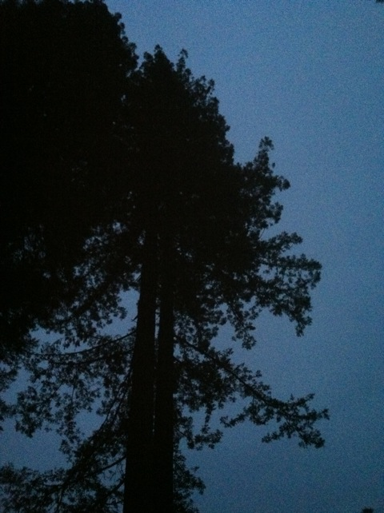

Glass Beach Road Trip 2012
San Francisco Glass Beach Santa Cruz Beach Boardwalk
All right. So this was our first suicide night. What's a suicide night you're asking? Well, basically we started driving from Vallejo, CA at around 11:00 and we arrived in Crescent City (its right by the Oregon Border), CA at about 6:00 AM the next morning. So basically we spent the whole night driving. We had been talking about suicide nights on our road trips forever, well a couple days before the trip started, Cody got the idea of heading on up towards the Northern Redwoods since not only are they cool, but we'd also be doing our first Suicide Night. We had been talking the talk forever, now it was finally time to walk the walk and see if it was at all like we were expecting. The plan was that I'd drive from Vallejo at 11:00 and then we'd switch at around 4:00 and Cody would drive from there. I was driving up until 2:30 when I felt that I needed to go to sleep immedietly. Luckily Cody was randomly awake at the time because car sleep really sucks, and he wanted to play Echos because what better place to play it than a windy road in the middle of the fog at 2 A.M in the middle of nowhere Northern Northern California hundreds of miles north of San Francisco? I was out from 2:30 to 5:30. Sometime during that time, Cody ran over an opossum and made it road kill, and I slept through it while everyone else was horrified. Then at 5:30, we stopped to get gas, as well as switch drivers as now Cody was not only on the verge of falling sleep, but was puking half digested bagel all over the gas station because apparently road trips without sleep makes Cody puke. So after that, I was driving from 5:30 on. I took a photo of this as I found it funny that anyone would be dumb enough to drive away with the gas pump still in their car. We were half asleep and we didn't make that mistake.
F*CK YOU SUN!!! IT'S 7:00!!! GET UP RIGHT NOW AND RISE HERE INSTEAD OF DENVER!!!!!!

We made it!!! We made it to the Northern Redwoods!!! =)
It looks so peaceful with the fog rising up above the Redwoods.
Anyone wanna take a swim?
"Nature is good!!! Nom Nom Nom Nom Nom!!!!"
The day before the trip, after Cody already suggested that we head on up to the Northern Redwoods, I suggested that since we're literally less than 10 miles away, we just cross the border and head on over to Oregon briefly so that we could all get another state credit. So I found a small town called Brookings 15 miles away, and BAM!!! We went there.
This place may not look like anything special, but it was ranked the 2nd best resteraunt in Brookings by Trip Advisor!!! =) And since the #1 place didn't serve breakfast, we went here. Mattie's Pancake House. Let's hope that Trip Advisor is correct.
It was good. Nothing spectacular, nothing thats gonna Crack my Top 10 Resteraunts List, but I liked it. I liked their chocolate chip pancakes and their hot chocolate, but what surprised me the most was the fact that all of our breakfasts came with these toy snakes. It was cool, but strange, especially considering nobody else had any snakes in their breakfast. I'm guessing that we got them because we were the only Non-Brookings Locals there. But hey, it was cool. And most importantly, now I can say I've had breakfast in Oregon.
So that was our morning in Oregon!!! What do I think of it!!? Well, not impressed so far, but I can't really judge since I just barely made it in the state to begin with and didn't go anywhere near the good parts of Oregon, Salem and Portland. It's kind of like someone saying they're not impressed with California and the only place they went was Barstow. It wouldn't be a fair judgement of the state and thats sort of how I feel about judging Oregon solely based on my morning in Brookings. But whatever. 23 states down. 27 to go.
Well after an interesting morning in Brookings, OR, and a 4 hour drive where Cody got pulled over for speeding (shame he couldn't try crying or puking his way out of it), we decided to head over to the Lower Redwoods.
This is why we're here!!! To drive through a tree!!! =)
I feel like I'm in a cartoon right now.
Up the skirt shot from inside the tree.
IT DOESN'T FIT!!!!
Walk Through Stump. *yawn*
Are these trees big?
Hey guys!!! I found a treehouse!!! =)
GRR!!! WHERE'S THAT COP WHO PULLED ME OVER!!!? I NEED HIM TO COME BACK SO I CAN PUKE ALL OVER HIM!!!!
I ate lunch in a treehouse. Why? Because I'm a nut.
Time for us to take the very windy road down to Glass Beach.
Are we there yet?
 Yep!!! We're here at Glass Beach!!!
Yep!!! We're here at Glass Beach!!!
Finally, its the main inspiration for this road trip in the first place. Glass Beach.
Hey guys!!! I found a peice!!!!
All right. For those of you who don't know, let me tell you whats so special about Glass Beach. Back in the 1930s, Glass Beach was basically the dump for Fort Braggs, CA. They polluted the place to death with everything you could think of. It was so bad by the 40s that everyone just forgot about it. Then sometime in the 90s, somebody came back and noticed that the glass had been crushed into smaller and smaller peices until it was rounded out, couldn't cut you, and became beautiful little colorful gems. Seeing just how well mother nature cleaned up our mess, they got the rest of the crap out of Glass Beach and now its a National Beach.
See look how pretty all that glass is.
 What was in the 30s, empty glass bottles, most likely empty beer and vodka bottles from some asshole, is now a sight of beauty on this beach.
What was in the 30s, empty glass bottles, most likely empty beer and vodka bottles from some asshole, is now a sight of beauty on this beach.
A great photo showing the beautiful glass glowing against the rocks.
Everyones out hunting for little shiny peices of glass.
"I really hope all the glass has been properly ground up and that mother nature didn't miss a spot."
 "I got a green peice of glass."
"I got a white peice."
"I got a blue peice."
"I got a rock."
"I got a green peice of glass."
"I got a white peice."
"I got a blue peice."
"I got a rock."
"Getting downs gonna suck. But who cares about that. I've got photos to take!!!"
Man, the beach does look nice from up here.
Sunset on the ocean.
This would be a great place to cliff jump if it weren't for these three little problems. #1: I've got all my clothes on and all my cameras with me. But whatever, I can just put them away except for the fact that #2: You'd land on those rocks unless you REALLY REALLY REALLY knew how to leap out FAR!!! And even if you can leap out that far #3: The water is too shallow to jump into.
Hello cats. Hows it going?
All right. After our time at Glass Beach, we decided to head on over to Bowling Ball Beach. However, the sun was setting and we were racing to get there before it became pitch dark. We failed and never made it to Bowling Ball Beach (partially because I was driving). After that, we were just driving through the middle of nowhere on the California Coast, looking for a place to eat since we wanted warm food (especially Cody, who never ate breakfast in Brookings). We finally found some random place in Gualala that was good. After that, we were trying to find a place to stay. We were just driving through the middle of nowhere, looking to stop. I just said pull over and lets sleep. But everyone else wanted a motel. We barely found any, and the few that we did demanded that everyone be 21, so we ended up just taking my advice and just pulled over (I have no idea where since I was asleep, but I think I remember waking up to a groggy blurry 7-11 at random times). Next time, look into Couchsurfing.
Santa Cruz Beach Boardwalk
Home